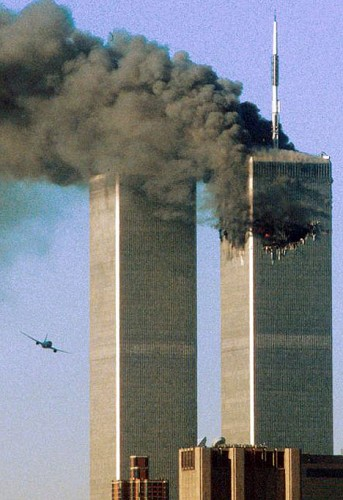

吁请超度纽约世贸亡魂
冯冯
犹太教、印度教、希腊东正教，甚至于伊斯兰教，都各有举行哀悼大会，分别共同哀悼死难者的悲惨痛苦死亡。
纽约世贸大楼两所被恐布份子劫持航机撞炸，刹那间，上万生命化为飞灰，人间惨剧浩劫，无过于此，人所共哀，全球震惊，各地各种宗教教堂与团体纷纷举行追悼聚会。天主教的教堂日夜开放，给信徒前往祈祷。救世军、圣约瑟教堂、圣保罗教会、圣心教会......都鸣钟致哀。基督教的浸信会、长老会等教会，圣公会的各堂，也都举行哀悼，举行烛光致哀大会与游行。成万群众前往美加边境和平门献花致哀，也向美国使馆献花致唁。
各地佛教也有很多寺庙举行超度法会，但是，从电视与媒体上看，显然瞠乎其后远不及各宗教教堂的场面。在本地的五大佛寺，也未见到举行特别超度法会，只见到几处小小道场的法会，是华人密宗的，和一处西藏人的密教寺庙，两处有超度法会，人数不多，数十人而已，可能是全部信徒全体出动了。
洋人的电视特辑主持人，遍访各宗教法会之余，播映实况，很感慨地说：为何有些宗教信徒如此富于同情？而另一些宗教信徒如此冷漠无情？是宗教信仰的本质呢？抑或是民族性不同？
他没有指明，但是已经用画面来投射出很显明的暗示指的是谁，使人感觉十分难为情。打电话去劝请各大佛寺举行超度法会，反应是冷淡的。有一家说超度法会是每年盂兰节才做，有一家说人手不齐，有一家说师父远行未归，有一家说那是美国人的事自有美国那边的寺庙超度，第五家说做超度法会，需要花很多费用，例如施斋、给“利是”（红包）、给唱诵班、香烛香油、电费暖气，谁付钱？私人的超度有家族出钱，这些无主的谁付钱？言下确有各困难，这也是可以谅解的，此地的确佛教徒人数很少。
没奈何，只好我们自己在家中小小佛堂为之念经拜佛，祈求阿弥陀佛接引纽约的惨死冤魂。但是，人微言轻，我一个人有何力量超度那么多人呢？唯有在此网上祈请大家各人都持念吧！不一定非上寺庙不可，各人在自己的家中持念阿弥陀佛经或名号与往生咒，回向给纽约世贸死亡冤魂，以各人的诚心祈求，尽一点微忱吧！
原载《佛网》网站
2000 年 ── 2002 年